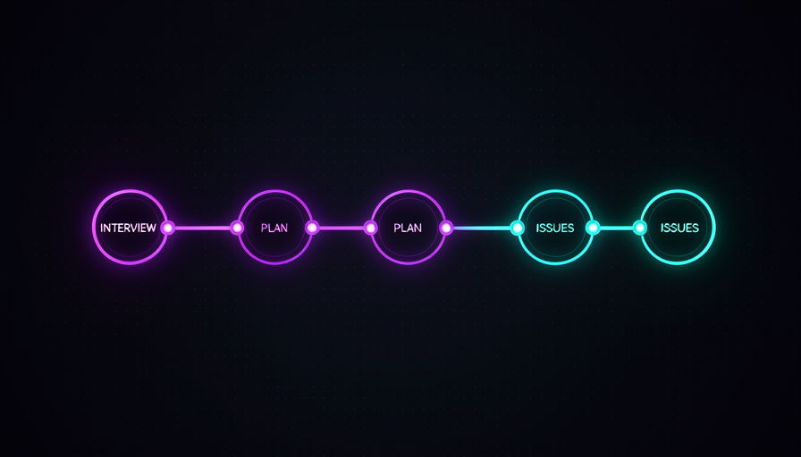
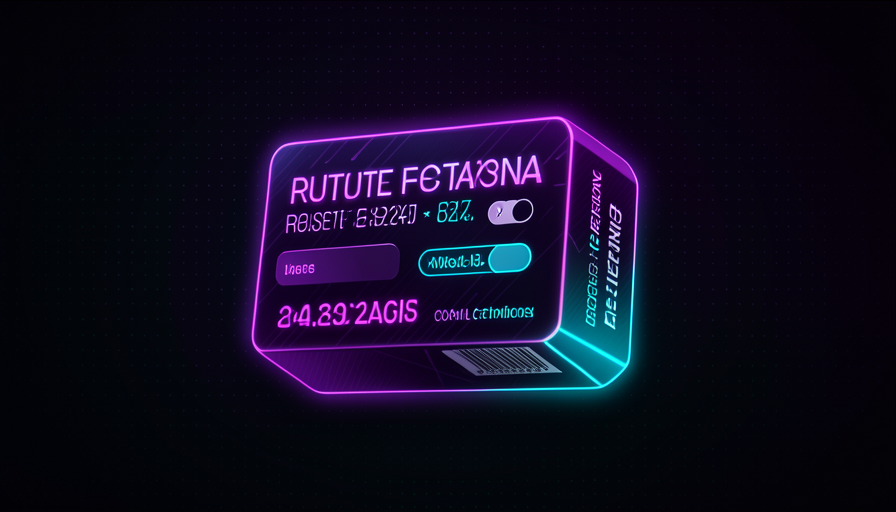
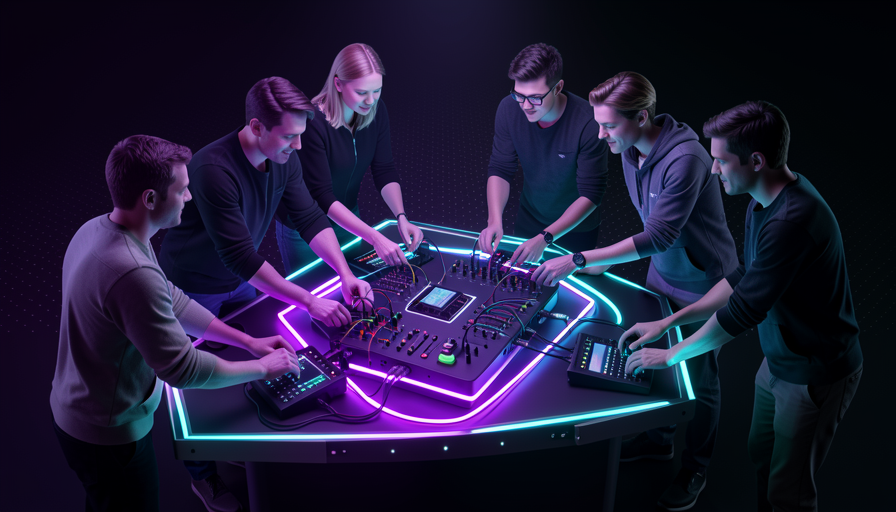

📖 Living glossary (read first — come back whenever you need to)
You already know what a skill, procedure, and grill-me are (Track 3). Here are just the terms new from this module — remember these before moving on:
🔗 grill-me → PRD → issues
🧠 Imagine it this way: A furniture factory. The raw wood comes in; it goes through the saw, then the sander, then the varnish. Each station does a something well made and pass it along. No one tries to saw, sand, and varnish in the same stroke. Your thinking becomes an assembly line, too: raw idea → interview → document → tasks.
In module 3.5, you learned about the grill-me — the skill that interviews you until you arrive at a shared understanding (shared understanding). It is powerful on its own, but Matt Pocock doesn't stop there: he uses it as first station a line. In his words, he chains three skills in sequence: grill-me → two-PRD → to-issues. It’s what he calls, in practice, a “thinking pipeline.”
The logic of each station: the grill-me clears the clutter from your head and aligns your vision; the two-PRD take this alignment and write a PRD (the product requirements document); and the to-issues breaks the PRD down into a backlog of issues ready to implement. You go from a vague idea in your head to concrete tasks in the backlog — without ever writing a line of code along the way. The reason: each step is small and verifiable, so it’s easy to fix things before the error spreads. The common mistake is jumping straight from the idea to the code (asking "implement this" in the dark) and discovering, three hours later, that AI built the wrong thing.
Matt's pipeline: three chained skills become an assembly line for thinking.

In one sentence: chaining skills is like building a production line that takes your raw idea all the way to a backlog of ready-to-go tasks.
Going deeper (optional): why "two-PRD"?
The name suggests a skill that produces the PRD in two passes — a broad first draft, then a refined version—instead of trying to get everything right at once. It’s the same principle as the pipeline applied inside a station: small, verifiable steps almost always beat one giant swing. The exact skill name isn’t important; the idea is: each station does focused work and delivers something better than it received.
⛓️ Procedures in sequence
🧠 Imagine it this way: a cake recipe with numbered steps. You don’t throw in eggs, flour, and baking powder any old way and hope for the best—you beat the egg whites first, then mix, then bake. The order is the recipe. Chaining procedures is exactly that: numbered steps that you launches, one at a time.
Remember the distinction from Track 3: there are procedures (you invoke) and abilities (the model invokes it on its own). Matt’s pipeline is made up of procedures: it decides which skill to run at each step. That’s why “chaining” here isn’t automatic magic—it’s you calling grill-me, reading the result, then calling two-PRD, reading again, and only then calling to-issues. Each link in the chain is a conscious decision you make.
Why procedures instead of a “mega-skill” that does everything? Because each station has a checkpoint. After grill-me, you check that the alignment matches your vision; after the PRD, you check that the requirements are right; only then do you let it break things down into issues. If something went wrong, you correct there, cheap, before propagating it to the rest. The common mistake is wanting AI to take an idea → code in a single command: then there’s nowhere to stop and correct course, and by the time the error appears, it has contaminated everything. A sequence with checkpoints is slower step by step, but much faster overall — because you almost never have to redo anything.
Quick recall: why does Matt use chained procedures instead of a single "mega-skill" that does everything?
In one sentence: are procedures (you invoke them), one at a time, with a checkpoint between each link in the chain.
🎮 You’re in the driver’s seat
🧠 Imagine it this way: a car with autopilot. You can let go of the wheel and let it take you there — but Matt prefers to keep his hands on the wheel. The car helps with the tedious part (staying in the lane), but it chooses the destination and every turn. The thinking is its own; AI is just the power steering.
Here we see Matt's central philosophy, introduced in Track 3 and wrapped up here: he prefers procedures precisely because he wants to be in the driver's seat. In his words: "I know my skills, I don't want to delegate my thinking" ("I know my skills, I don't want to delegate my thinking"). It hides most of the skill descriptions from the model (disable model invocation) and keeps the knowledge in the human. The grill-me → PRD → issues pipeline is the concrete form of this: the AI handles each stage, but who steers the chain is you.
There’s a contrast between schools of thought here that’s worth knowing. Other people (e.g., the approach Superpowers, prefer the opposite: let the model in control, invoking skills on its own. Matt prefers the human in control. It’s not that one is right and the other wrong—it’s a decision about how much you want to delegate the thinking. O reason of Matt's choice: product thinking and architecture are the parts that for real scales with you, so it doesn’t outsource this part. The common mistake is confusing “letting AI do the grunt work” with “letting AI make the decisions”—chaining procedures gives you the first without giving up the second.
🔬 Worked example: the same feature, with and without the steering wheel
Task: add "export report as PDF" to the app. Same skills available, two approaches:
Without the steering wheel
"AI, add PDF export — you decide everything." → It chooses a heavyweight library, invents a layout, and breaks the existing report screen. You only find out at the end and have to redo it.
With the steering wheel (pipeline)
grill-me asks you: “one page or several? reuse the current layout?” → you align. two-PRD writes the requirements. to-issues generates 3 small issues. You review each step—and the AI implements what you decided.
In one sentence: the AI does the grunt work at every station; the thinking — and the steering wheel — are still yours.
♻️ Repeated 3 times? Turn it into a skill
🧠 Imagine it this way: you write down the same coffee recipe on a little piece of paper every morning. The third time, you stop and think: "why not just stick this on the wall once and for all?" From then on, no one in the house needs to remember — it’s written down. A Skill is the paper on the wall of your workflow.
There’s a famous principle in programming: DRY ("Don't Repeat Yourself", don't repeat yourself). The classic idea: if you copy and paste the same piece of code, turn it into a single function. Matt applies this to human: if you did the same plan, the same chain of thought, several times by hand—stop and turn it into a skill. His wording is direct: "I've made this plan 100 times → turn it into a skill" ("I've done this plan 100 times → turn it into a skill").
The practical rule that works: after you’ve repeated it about three times, it becomes a skill. Once could be luck; twice could be coincidence; by the third time, it’s a pattern — and patterns call for automation. Remember Track 2: you can package knowledge + skill (what you know and what you’ve done many times) into a reusable procedure. What no you can package it; it’s the wisdom (knowing WHEN to use it)—that's why the "repeated 3x" trigger is yours, not the AI's. The common mistake there are two extremes: never packaging (and redoing the same plan forever), or packaging everything too early (and filling the context with skills you used only once). The third repetition is the sweet spot.

In one sentence: Human DRY = the third time you repeat a plan by hand, turn it into a skill.
Going deeper (optional): why "3 times" and not "1 time"?
Packaging too early comes at a cost you already know from Trail 3: every skill leaks your description in the context window. A skill you’ve used only once is pure cost, with no return. Waiting for the third repeat ensures the pattern is real and recurring—then the investment in writing the skill pays off many times over. It’s a balance between avoiding repetition (DRY) and keeping the context from bloating (context hygiene).
🌊 Distribute to the team
🧠 Imagine it this way: A restaurant where only the chef knows how to make the secret sauce. When they’re out, the dish comes out badly. Now write down the recipe and stick it in the kitchen: every a cook always gets the sauce right. The house's worst dish got better. A shared skill is the recipe on the team's kitchen wall.
Here it gets big. After turning it into a skill, Matt distributes it to the team: "distribute to the team, everyone plans the same way" ("distribute it to the team, everyone plans the same way"). Suddenly your best planning workflow doesn't live only in your head — it becomes the standard for all. The junior who used to plan poorly now plans with the same skill as the senior. That’s what he calls "raising the floor" (raising the floor): the team's worst case improves.
Notice the difference between raise the ceiling e raise the floor. Training an individual star raises the ceiling — the best gets better. Sharing a skill raises the floor — o worse the team’s possible outcome improves because no one starts from zero anymore. And raising the floor usually pays off more: a team where even the worst plan is already "good" produces much more consistent quality. This connects to Track 2 ("your skills are the ceiling"): when you package and distribute, you raise the ceiling of each person at a time. The common mistake is treating your skills as a competitive secret within the team — keeping them to yourself doesn’t make you more valuable; it makes the whole team slower.

In one sentence: distributing the skill raises the floor—the team’s worst planning becomes, at a minimum, your best.
🔁 Contribute back
🧠 Imagine it this way: the recipe on the kitchen wall isn’t sacred. When a cook discovers that a squeeze of lemon improves the sauce, they edits the recipe on the wall. The next day, everyone already makes better sauce. The shared skill is alive: it improves with everyone’s use.
The final link closes the cycle: contribute back. Matt's full sentence is: "distribute to the team, everyone plans the same way, contributing back to that skill, raising the floor". In other words: the team doesn’t just uses the skill—when someone spots an improvement, they contribute it back to the shared skill. It’s the model of open-source applied to your internal workflow: many eyes, many improvements, an ever better artifact.
That’s why “raising the floor” isn’t a one-time event, but a cycle: every contribution raises the floor again, and the new floor becomes everyone’s starting point. Notice how everything in Track 3 connects: skill anatomy (3.1) gave you the building block; context cost (3.2) taught you to hide it when needed; teach skill (3.3) and teaching that sticks (3.4) showed you skills that learn; grill-me (3.5) gave you the first station; and now you chain, package, distribute, and improve as a team. The common mistake is treating the skill as "done" once it’s written — good skills are living things. Next, copy the complete pipeline and use it today:
# PIPELINE: da ideia crua ao backlog (rode UMA estação por vez, conferindo entre elas) # 1) grill-me — alinhe a visão antes de qualquer código /grill-me > Interview me relentlessly about every aspect of this plan until we reach a > shared understanding. Ask one question at a time and give your recommended > answer. If a question can be answered by exploring the codebase, do that instead. # -> CONFIRA: o entendimento bate com a minha visão? (se não, ajuste aqui) # 2) two-PRD — transforme o alinhamento num PRD /two-prd > Com base no que alinhamos, escreva um PRD: objetivo, requisitos, escopo, > o que está FORA do escopo, e critérios de aceite. # -> CONFIRA: os requisitos estão certos? falta algo? (corrija o PRD aqui) # 3) to-issues — quebre o PRD em tarefas pequenas /to-issues > Quebre este PRD em issues pequenas e independentes. Cada issue: título, > descrição e critério de aceite. Sem implementar nada ainda. # -> CONFIRA: cada issue é pequena e clara? entregue no backlog. # DRY humano: fez este pipeline 3x? -> vire skill -> distribua pro time -> # todos contribuem de volta -> o piso do time sobe.
Quick recall: what does "contribute back" mean for a shared skill?
In one sentence: the skill is alive—people who use it improve it and give it back, and the team’s baseline rises with every contribution.
🧾 Module Summary
Next track:
Track 4 — Advanced Techniques: AFK, sandboxes, GitHub Actions, queues, and self-improving systems. You step out of the loop and put agents to work while you sleep.